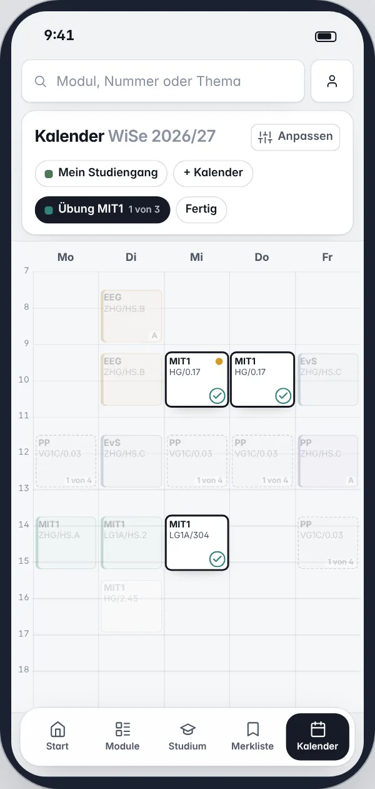

Die zweite Runde ließ am Handy in der Woche anhaken: Haken von 18 px auf Terminen von 67 px, dazu Chips für die Kalender, die offene Wahl und „Fertig“. Hier drei Wege ohne beides. Alle haken mit den Kacheln an, mit denen der Termin schon anhakt, und eine Empfehlung ist von der Woche bis „Fertig“ durchgespielt.
„Also chips sind wirklich in 90% der Zeit ein schlechtes UI tool. Bei der handy version muss nochmal dringend daran gearbeitet werden, wie man das richtig macht mit dem übung auswählen. Da braucht es noch ein besseres konzept.“
Die Übung von MIT1 im Fokus, wie die zweite Runde sie am Handy zeigt. Gemessen in den Pixeln des Handys, 390 breit.

1 2 3 472 % der ersten Semester eines Bachelors wählen Gruppen. Meist hat eine Veranstaltung zwei bis vier Gruppen (74 von 84), im Katalog höchstens sieben. Eine Themenwahl hat bis zu 13 Themen (Berufspraktische Profilierung).
Dieselbe Woche, dieselben Wahlen: Übung MIT1 mit drei Gruppen, dann Praktikum PP mit vier. Oben in der Leiste stellst du alle drei Handys auf denselben Stand. „Sieben Gruppen“ zeigt Praxis und methodische Begleitung aus der Sozialen Arbeit, als wäre es eingeplant, wie im Termin-Konzept.
Die Woche bleibt oben, darunter liegt die Wahl als Sheet: die Gruppen als Kacheln des Termins. Ein Tipp hakt an, die Woche zeigt sofort, was der Haken tut.
Tippe eine Kachel an, oder eine umrandete Gruppe in der Woche.
Jede Gruppe eine Zeile mit ihrem Tag als Band, wie „Der Tag“ im Termin: deine Termine, die Gruppe schraffiert dazwischen, darunter, was sie bedeutet.
Tippe eine Zeile an.
Die Woche oben wie in H1, darunter eine Leiste: ‹ und › gehen durch die Gruppen. Die Gruppe, die dran ist, ist in der Woche hervorgehoben, ein großer Knopf hakt sie an.
‹ und › gehen durch die Gruppen, „Anhaken“ nimmt sie.
Grün, wo ein Weg am besten ist. Die Höhen misst diese Seite an den drei Handys oben, im Stand „Übung MIT1“.
| H1 Unter der Woche | H2 Tage im Vergleich | H3 Eine nach der anderen | |
|---|---|---|---|
| Die Woche beim Wählen | oben, – px hoch | klein, – px hoch | oben, – px hoch |
| Was die Gruppe mit ihrem Tag macht | in der Woche zu sehen | als Band und in einem Satz | in der Woche und als Satz, für eine |
| Gruppen vergleichen | nebeneinander, als Kacheln | untereinander, mit ihrem Tag | eine nach der anderen |
| Eine Gruppe anhaken | ein Tipp | ein Tipp | Hingehen, dann „Anhaken“ |
| Sieben Gruppen | fünf und „+2“, die passenden zuerst | sieben Zeilen | sieben Schritte |
| Wie im Termin | dieselben Kacheln | dasselbe Band wie „Der Tag“ | neu |
H1 für den Alltag: zwei bis vier Gruppen, ein Tipp, die Woche darüber. Wer abwägen will, tippt „Vergleichen“: dasselbe Sheet wird ganz hoch und zeigt jede Gruppe mit ihrem Tag. Das ist ein Weg mit zwei Höhen, so wie das Sheet des Termins halb und ganz hoch ist. Hier durchgespielt, von der Woche bis „Fertig“, mit „Offen“ und den Kalendern ohne Chips.
Alles ist anklickbar; links springst du in jeden Schritt.
Jeder Chip der zweiten Runde am Handy, was er war und was jetzt dasteht. Was zeigt, ist eine Zeile, was tut, ein Knopf, was schaltet, ein Segment oder Schalter.
| Zweite Runde | Was er war | Jetzt |
|---|---|---|
| Mein Studiengang | zeigt, welcher Kalender da ist | Die Zeile Kalender im Kopf: „Mein Studiengang, Lena als Spur“. Ein Tipp öffnet das Sheet der Kalender. |
| Lena · Spur | schaltet einen Kalender | Im Sheet der Kalender ein Segment Voll · Spur · Aus, 44 px hoch. Die Woche darüber folgt sofort. |
| + Kalender | legt einen Kalender an | Die Zeile Neuer Kalender im Sheet der Kalender, „+ Modul“ als Knopf an jedem Kalender. |
| Übung MIT1 · 1 von 3 | eine offene Wahl | Die Zeile Offen im Kopf: „2 Wahlen offen“. Im Sheet eine Zeile je Wahl. Auch ein Tipp auf eine gestrichelte Gruppe in der Woche öffnet sie. |
| Übung MIT1 · 1 von 3 | die Wahl im Fokus | Der Kopf des Sheets: das Kürzel des Moduls, „Übung“, und wie viele angehakt sind. |
| Fertig | beendet den Fokus | Schließen oben rechts. Unten groß „Weiter: Praktikum PP“, oder „Fertig“, wenn nichts mehr offen ist. |
| Bio trifft VL MIT1 | ein Hinweis | Eine Zeile in Offen, gelb, wie am Rechner. |
| FÜS › | ein Weg | Eine Zeile in Offen, die nach „Mein Studium“ führt. |
Ein Tipp auf eine gestrichelte Gruppe in der Woche: die Wahl oder der Termin?Der Termin hakt auch an, zeigt aber zuerst Datum, Raum und Person.
Vorschlag: die Wahl, als H1. Ein Tipp auf einen festen Termin öffnet weiter den Termin.
Eine Themenwahl mit bis zu 13 Themen: Kacheln oder Zeilen?
Vorschlag: Zeilen mit dem Titel des Themas, wie in „Vergleichen“. Kacheln tragen nur Tag, Zeit und Raum.
Steht auf der Kachel, wer die Gruppe leitet?
Vorschlag: nein. Das steht in „Vergleichen“ und im Termin; die Kachel bleibt bei Tag, Zeit und Raum.
Wie weit tritt der Rest der Woche zurück, während man wählt?
Vorschlag: auf 42 % statt 26 %, damit die eigenen Termine lesbar bleiben; die Gruppen der Wahl liegen darüber, umrandet.
Am Rechner auch „Vergleichen“?
Vorschlag: ja, im Fokus neben „Fertig“. Es zeigt die Tage rechts an der Stelle von „Offen“.
Konzept, nichts davon ist gebaut · Daten von canary, 26.10.2026 · Kacheln, Band und Sheet aus den Termin-Konzepten · Folia 1.45.3